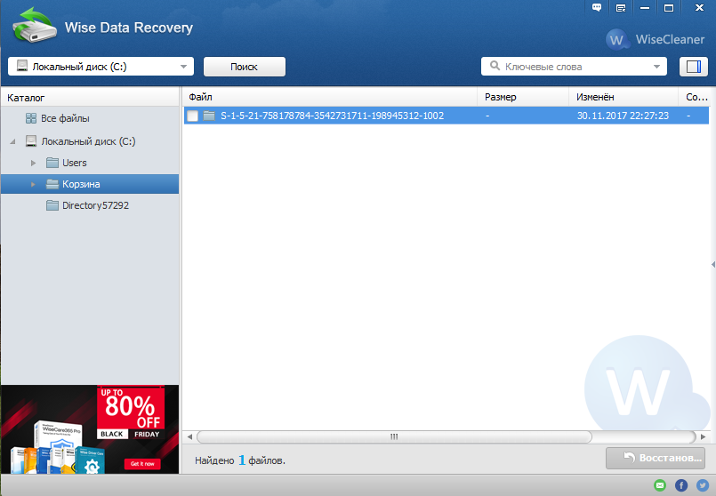
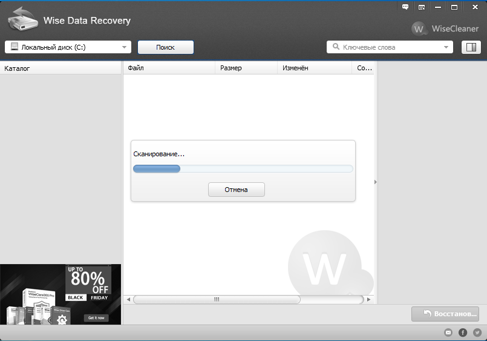
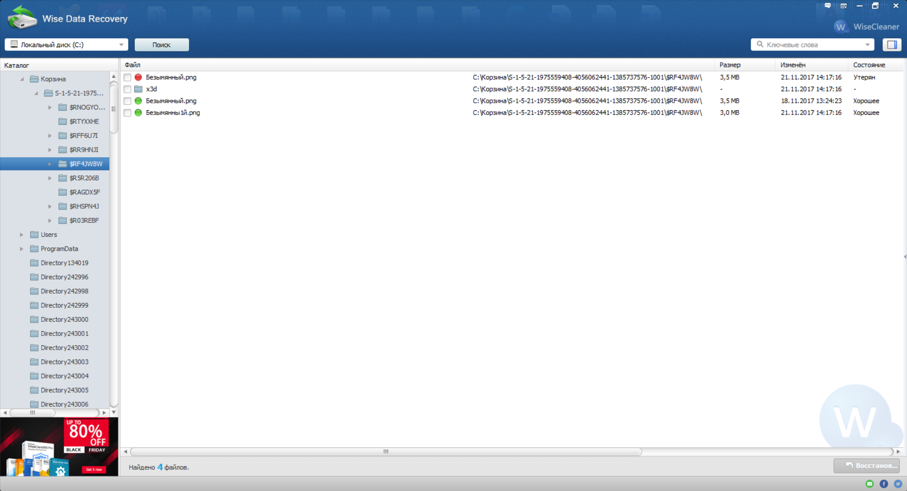
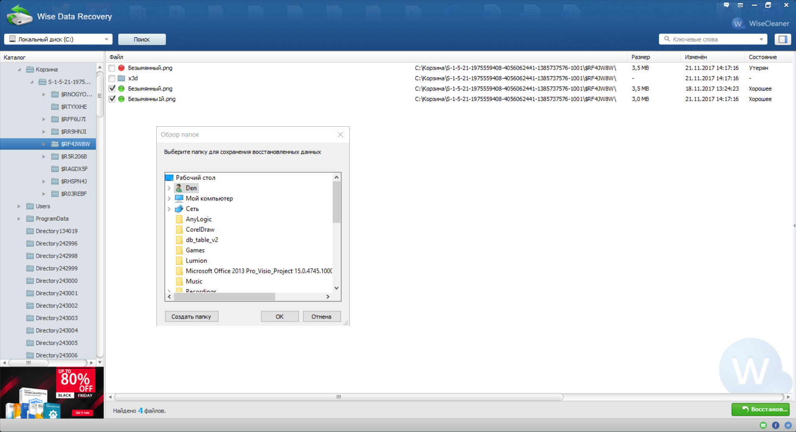
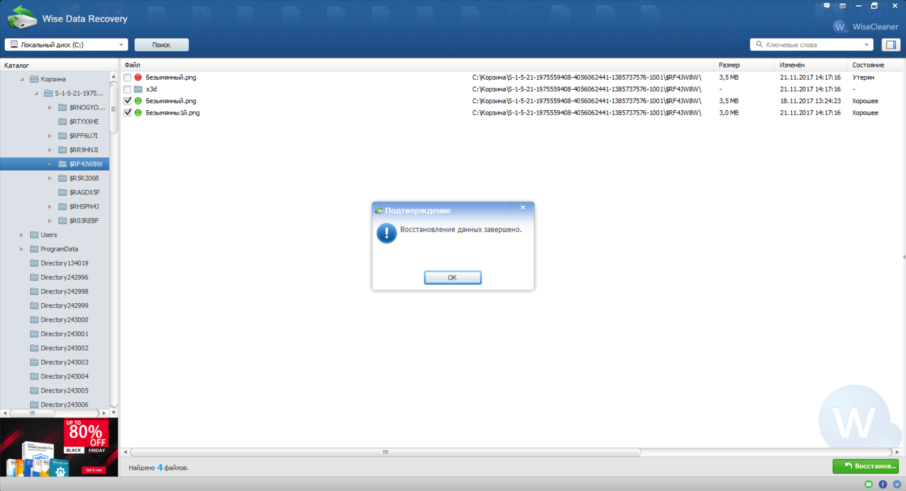

Wise Data Recovery – программа для восстановления данных.
Рис. 1. Главное окно программы
Главное окно программы представлено на рисунке 1.
Рис. 2. Процесс поиска удаленных файлов
Рис. 3. Выбор удаленных файлов
Как можно увидеть на рисунке 76 когда-то были удалены из корзины файлы формата “png”. Попробуем восстановить их.
Рис. 4. Выбор папки, куда будут восстановлены файлы
После выбора файлов нам предлагается выбрать папку, куда будут восстановлены удаленные файлы.
Рис. 5. Сообщение о том, что восстановление завершено
Вот и все, файлы восстановлены.
Но появилась проблема, все восстановленные файлы не открываются, то есть скачивается пустой файл с такой же датой создания, с таким же именем, но абсолютно пустым. Картинки выдают ошибки, текстовые документы открываются пустыми.